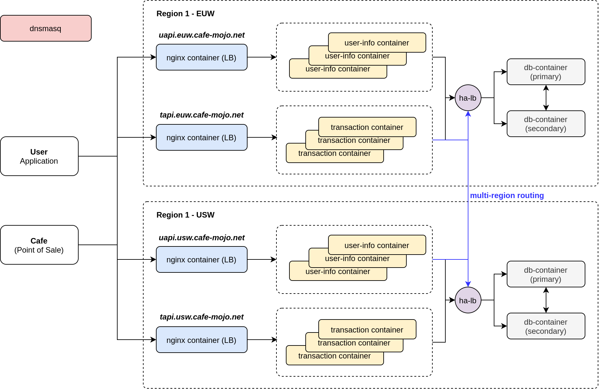

Anupal Mishra
Hi, I am software engineer with 5 years of experience previously working at Cisco Systems in building large scale network systems across multiple on-prem and cloud platforms. I recently concluded Masters in Computer Science at Trinity College Dublin and am looking for opportunities in software consulting or engineering roles.
Projects

Multi-protocol aggregation over QUIC for IoT Gateways
GitHub
Report
As part of my MSc Computer Science Dissertation research project, I explored the potential of leveraging QUIC transport protocol to improve data communication in IoT networks. I developed a Python-based IoT gateway that aggregates sensor data from multiple devices using CoAP and MQTT protocols over a single QUIC connection for enhanced performance. The project involved conducting experiments to demonstrate how QUIC can reduce round-trip time (RTT) and optimize the total bytes exchanged during data transmission. I built a Docker container-based lab to simulate real-world scenarios with live traffic, allowing for a comparative analysis between this QUIC-based system and a traditional TLS 1.3-based system. The results showed that QUIC offers significant performance improvements, especially in high network loss environments and with a larger number of connected clients, demonstrating its scalability and reliability for IoT communications.

Dynamic Sustainable Wayfinding
GitHub
Demo
Presentation
As a team of 7 people working on Advanced Software Engineer project at Trinity College Dublin, we developed a robust city-scale routing engine designed for multi-modal navigation, seamlessly integrating multiple transportation modes, including bus, tram, car, and bike. Our goal was to provide users with highly efficient, real-time navigation options that adapt to dynamic factors such as traffic congestion, road accidents, and public transit schedules. The engine, built in Java, implements a custom-weighted A* algorithm to deliver routes that are 99% optimal by evaluating live data inputs and prioritizing speed, convenience, and safety.
To enable this, we processed extensive GTFS data to construct a multi-mode transit graph that represents Dublin and its surrounding counties. This allowed us to create a detailed map of the city's transit system, enabling users to switch seamlessly between transport modes within a single journey. The backend was deployed using Kubernetes on Google Cloud, ensuring scalability and reliability under various load conditions, while infrastructure automation was managed through Terraform to facilitate rapid updates and deployment.
In addition to backend development, we built a cross-platform mobile application that provided users with a streamlined navigation experience, offering real-time route updates and transit schedules. We also integrated gamification elements, such as setting personal goals and unlocking achievements, to boost user engagement and make the navigation process more interactive and rewarding. This holistic solution not only improves urban mobility but also encourages users to explore diverse transit options for their daily commutes.

Cafe Mojo - A globally distributed cafe management service.
GitHub
Specification Document
For this project, I led a team to build a highly scalable, secure, and reliable system to manage cafe transactions and user memberships, with a focus on global availability. Our system allowed customers to view nearby cafes, manage group memberships, and redeem points across different regions, while cafe staff could process transactions and apply discounts. The functional requirements included synchronizing point-redemption across regions, notifying users when points were used, and supporting secure financial transactions. As the project lead, I was involved in all aspects of the design, and we divided the architecture into two main services: a Transaction Service for financial operations and a User Information Service for managing user data. Each region had its own dedicated services, load balancers, and databases to ensure scalability, reliability, and fault tolerance, with DNS routing client requests to the nearest data centre.
Our team containerized the technical infrastructure using Docker to simulate a global environment, utilizing NGINX as the API gateway and load balancer, Postgres for database management, and HAProxy for database failover and load balancing. Each region had separate database instances to manage user data, group memberships, and discount points, with primary and secondary instances ensuring high availability and disaster recovery. I ensured we prioritized security by implementing enhanced protection for the Transaction Service, which handled financial data, while maintaining encrypted communication for the User Information Service to safeguard sensitive information. The system was designed to handle millions of users, ensure consistency and availability during regional failures, and protect both user and transaction data.
Dublin Bikes Pre/Post Pandemic
GitHub
This project was my final submission for CS7CS4 - Machine Learning course at Trinity College Dublin. I was tasked to analyze the impact of pandemic on Dublin Bikes and how the usage changed during post-pandemic period.
The time-series dataset of Dublin city bike usage trends from 2018 to 2023 was preprocessed by merging multiple files, down-sampling data to match consistent intervals, and augmenting with weather and holiday information. A key feature, USAGE, was derived to represent bike inflows and outflows at stations. Two machine learning models, Lasso Regression and Random Forest, were implemented, with Random Forest outperforming Lasso in capturing both linear and non-linear relationships. The Random Forest model was used to assess bike usage patterns before, during, and after the COVID-19 pandemic, revealing significant declines during the pandemic and partial recovery in the post-pandemic period, although usage has not yet returned to pre-pandemic levels.
DSURE - VITAMIN-D Tracker
GitHub
Demo
I developed this application to address the growing issue of Vitamin D deficiencies, particularly among those leading sedentary indoor lifestyles. The app leverages Holick’s Rule to estimate Vitamin D production by integrating UV-Index data, body surface area (BSA) exposed to sunlight, and the Minimal Erythema Dose (MED) based on skin type. Developed using PyQt6 with an MVC architecture, the application efficiently handles user inputs, including geographical location and skin type, to calculate and visualize Vitamin D levels. The MVC design ensures a clean separation between data management, user interface, and application logic, enhancing the app's maintainability and user experience.
Peer-to-Peer NDN for Medical Sensors
GitHub
Specification Document
In this project, my team and I developed a secure peer-to-peer (P2P) medical sensor network to address the unique challenges faced by hospitals when implementing large-scale sensor networks. I led the design and development of this system, which aimed to create a reliable, scalable, and secure network for transmitting sensitive medical data from patient wearables to mobile devices used by doctors and nurses. We implemented a Named Data Networking (NDN) architecture that eliminated the traditional reliance on IP-based addressing, ensuring that the mobility requirements of healthcare professionals were met while maintaining data confidentiality and security. Our system used K-nearest neighbors (KNN) for simulating the wireless environment and TCP/IP sockets to establish P2P connections, ensuring encrypted, multi-hop communication between devices.
As part of the project, we integrated multi-threading and multi-processing techniques to optimize the system for performance on Raspberry Pi devices. This allowed us to simulate a distributed network of up to 100 nodes, with each node functioning as a secure participant in the network. We implemented Public Key Infrastructure (PKI) for authentication and encryption, ensuring that only authorized hospital devices could join the network, and all communication was encrypted at each hop. Additionally, we designed the system to be interoperable with other networks through a gateway protocol, enabling seamless data exchange between different sensor networks.